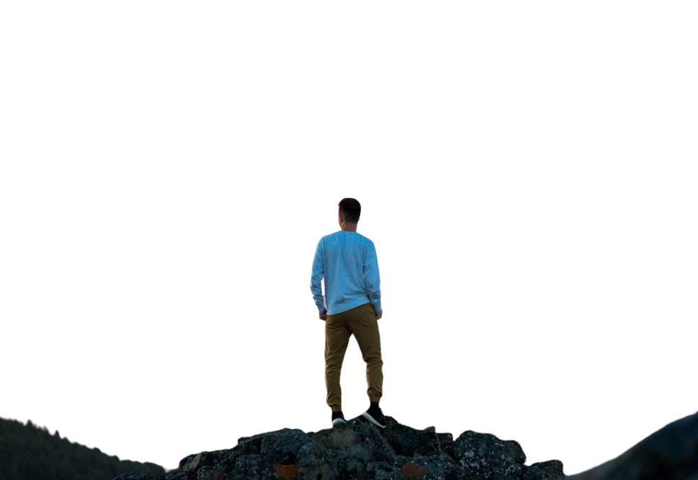
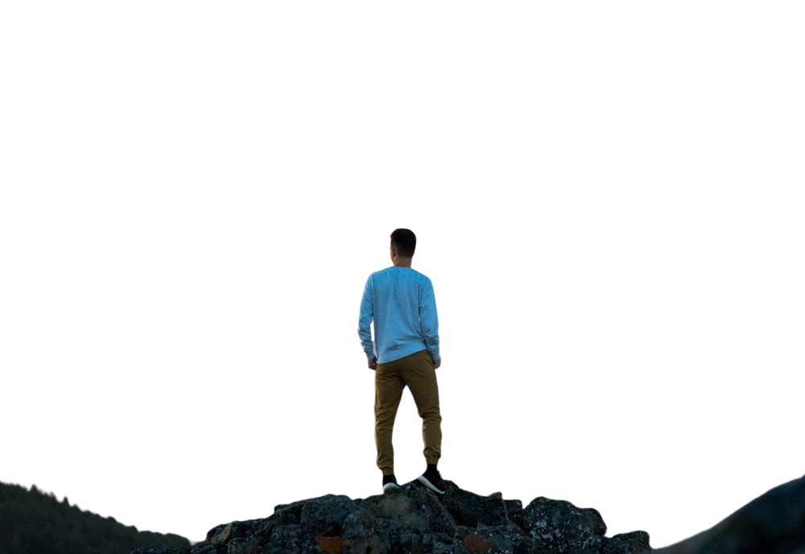

ADVENTURE
ADVENTURE TIME
An adventure is a collection of exciting experiences which can be provided by some bold & unusual activity. Adventure is what people seek when they want to live a vibrant and happening life. Everyone during some phase of life has a quench for adventure. For some it may be their way of living lives while for others it can be an escape from ordinary life.
SURFING
Wherever waves break, surfers will ride them.
Surfing is usually associated with warm ocean beaches like those
found in the U.S. states of Hawaii and California, and countries such as Australia. Surfers,
however, do not limit themselves to warm weather or ocean waves. Surfers dust a foot of snow off
their surfboards to chase waves off the coast of Antarctica. They trek through jungles to pristine
beaches in Southeast Asia. They share the water with great white sharks in South Africa.
They even ride the “silver dragon,” the giant tidal bore of China’s Qiantang River.
CYCLING
Cycling is not just a mode of transportation,
it's an adventurous sport that exhilarates both the mind and the body
As cyclists pedal through diverse terrains, they embark on a journey
filled with excitement and challenges. Whether it's conquering steep mountain trails,
navigating through rugged off-road paths, or speeding along winding highways,
every ride presents a new adventure waiting to be explored.
TREKKING
It is not merely about traversing landscapes but about immersing oneself in the raw beauty of nature,
forging a deep connection with the environment, and pushing personal limits.
Each trek presents its own set of challenges, from navigating rugged terrains to
braving unpredictable weather conditions, which instills a sense of excitement and accomplishment.
The rhythmic crunch of boots against the earth, the crisp mountain air filling the lungs, and the
panoramic vistas unfolding
at every turn all contribute to the allure of trekking.